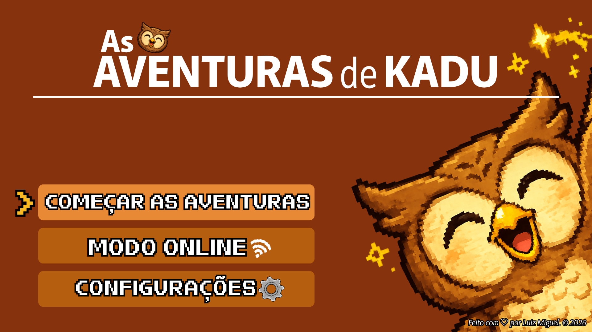

Explore, decifre enigmas e recupere o que foi perdido.
Kadu é uma jovem coruja curiosa que adora explorar, fazer perguntas e descobrir coisas novas. Um dia, um misterioso fenômeno faz com que todo o conhecimento da cidade comece a desaparecer: livros ficam com páginas em branco, mapas perdem seus caminhos, laboratórios deixam de funcionar e até as placas das ruas desaparecem.
Determinado a descobrir o que está acontecendo, Kadu embarca em uma grande aventura por diferentes lugares, enfrentando desafios, resolvendo enigmas e ajudando as pessoas a recuperar aquilo que foi perdido.
A cada descoberta, novos conhecimentos são restaurados, revelando que aprender pode ser a maior aventura de todas.
Curioso, inteligente e destemido. Kadu não se contenta com o silêncio do esquecimento. Com sua perspicácia, ele guia o jogador por cenários deslumbrantes e enigmas que exigem raciocínio lógico.
As Aventuras de Kadu é um jogo single-player e multi-player feito inteiramente em C++. Toda a lógica de enigmas, exploração e narrativa roda offline/online, proporcionando uma experiência fluida e imersiva sem necessidade de navegador ou conexão com a internet.
Desafios integrados a história
Cidades, laboratórios e mapas
Executável autossuficiente
Ambientação original

O que você está esperando? Baixe o jogo agora! Os botões estão desabilitados pois o jogo se encontra em desenvolvimento.
Windows (~150 MB)
Pacote de músicas originais do jogo.